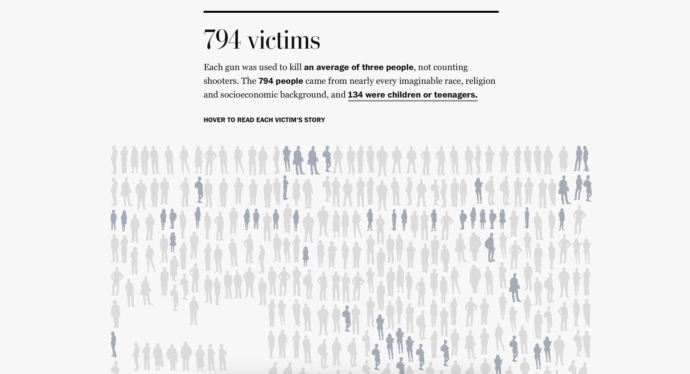

The Collection
Weekly digest of the best things on the internet
Edition Seven
Sunday 6 Dec 2015
This week has a lot about US gun politics, it was somewhat hard to avoid online. There's a higher than normal number of New York Times articles and a lower than normal variety in selection. The simple fact is, this topic will either be the entire basis of the 2016 presidential election, or the US will never do anything about it.
Sign up to receive The Collection in your inbox every Sunday
Weekly Wrap Up
At the begginning of the week Mark Zuckerberg and Priscilla Chan welcommed their daughter, Max, by announcing a huge plan to give their wealth to charity. There is been much discussion since then about the corporate and tax structure of the charity (in fact a private limitied liability company). Personally I think it is a smart move they way they've structured it. Only time will tell though. (I've linked an article, rather than the 5 or so Facebook posts, becuase it's easier).
China Is Building a Giant Animal-Cloning Factory to Feed the Masses… cool?
Xu is pretty confident that cloned animals are safe to eat and will benefit humanity: “This is going to change our world and our lives. It is going to make our life better. So we are very, very excited about it.?"
Japan is set to ignore an international court of justice ruling that last year prompted Tokyo to cancel the bulk of its whaling for the 2014-15 season. Every so often I rememeber this still happens. “Australia will continue to pursue the issue through the International Whaling Commission and in direct discussions with Japan,” he said.
Oscar Pistorius was guilty of murdering (no exceptions like last time) Reeva Steenkamp. The minimum sentence is 15 years (with exceptions).
South Africa's Supreme Court of Appeal ruled that the lower court did not correctly apply the rule of dolus eventualis - whether Pistorius knew that a death would be a likely result of his actions.
Some activists in Paris bought up 600 billboards to advertise the hypocrisy of the corportate sponsors of COP21 Climate Conference. "By sponsoring the climate talks, major polluters such as Air France and GDF-Suez-Engie can promote themselves as part of the solution—when actually they are part of the problem," Joe Elan of Brandalism says.

Finally, Apple open source Swift this week. They announced at WWDC15 that they would do so by the end of the year, however they way in which they went about it has shocked and pleased everyone in the tech community. Instead of just dumping some of the code online (liek they've done in the past) they've propperlyy opened up channels to allow for real collaboration. I think Swift now has the best chance at becoming the programming langaunge of the next 20 years.
.@SwiftLang’s Initial Checkin - all big things have small beginnings (5K iMac BG: https://t.co/qBoGE3Ojlo) #Swift pic.twitter.com/08cArngFVi
— Pat Murray (@_patmurray) December 5, 2015This is a shitty ad. Maybe it'll make me some money? Probably not because I assume you all run ad-blockers.
1 50 years of U.S. mass shootings: The victims, sites, killers and weapons
A look at 50 years of US mass shootings comparing different sources in a well produced, but chilling, interactive infographic.
50 years of U.S. mass shootings: The victims, sites, killers and weapons
by Bonnie Berkowitz, Lazaro Gamio, Denise Lu, Todd Lindeman and Kevin Uhrmacher for The Washington Post
on 4 December 2015.
8 min read
2 New York Times Front-page Editorial
The moral outrage of our gun epidemic. The New York Times runs its first front-page editorial in 95 years. https://t.co/A1cOIbFE0G
— Mark Harris (@MarkHarrisNYC) December 5, 2015There are a lot of charts about guns in America. This is the most instructive one I've seen. pic.twitter.com/6iA3Pl3wXw
— Robert Bingaman (@robertjosiah) December 3, 20153 Why Starbucks actually helps mom and pop coffeehouses
Starbucks draw such a crowd that they actually end up helping all the local cafes. Once the queue at a Starbucks becomes to long customers go searching for other local coffeehouses and end up boosting them more than they would have had Starbucks never opened there. Starbucks isn't too keen on this happening and is rather ruthless in the way it handles local coffeehouses; buying up leases from underneath them, or other intimidation tactics.
Hyman's new neighbor boosted his sales so much that he decided to turn the tactic around and start targeting Starbucks. "We bought a Chinese restaurant right next to one of their stores and converted it, and by God, it was doing $1 million a year right away," he said.
Don't Fear Starbucks
by Taylor Clark for Slate
on 28 December 2007.
8 min read
4 Your Christmas tree is slowing down your Wi-Fi
Bit a first world problem.
Though my wifi always dies when the microwave is running.
Your Christmas tree is slowing down your Wi-Fi
by Cara McGoogan for Wired UK
on 1 December 2015.
2 min read
5 Sia's Reject Opus: Songwriter on Reclaiming Adele, Rihanna's Unwanted Hits
An interview with the amazing Sia about her upcoming album, a collection of rejects. Sia, famous for Titanium and Chandelier, has written many hits for famous musicians. She sits down with Rolling Stone Magazine to discuss her musical rejects and why her next album will be her best.
I had seller's remorse with "Bird Set Free" every time it went away and then came back. First it went to Rihanna and then it was returned. Then it went to Adele, and Adele cut it and sounded amazing on it. Then it was returned. The truth is that we wrote "Bird Set Free" for Pitch Perfect 2. They rejected it and took another song of ours called "Flashlight." That become a big thing through the movie, but I could not believe they rejected "Bird Set Free" because to me it was such a big, anthemic, fun, sing-along-in-the-car song. I felt seller's remorse. I had grief. I feel connected to that song.
Sia's Reject Opus: Songwriter on Reclaiming Adele, Rihanna's Unwanted Hits
by Brittany Spanos for Rolling Stone Magazine
on 3 December 2015.
15 min read
6 Addicted to Distraction
Safe to assume that most-everyone is addicted to the internet. The question is what will the negative effects of it be in 20 years time.
Addiction is the relentless pull to a substance or an activity that becomes so compulsive it ultimately interferes with everyday life. By that definition, nearly everyone I know is addicted in some measure to the Internet. It has arguably replaced work itself as our most socially sanctioned addiction.
Addicted to Distraction
by Tony Schwartz for The New York Times Sunday Magazine
on 28 November 2015.
8 min read
Sign up to receive The Collection in your inbox every Sunday
Articles Hand-Picked While Listening To: